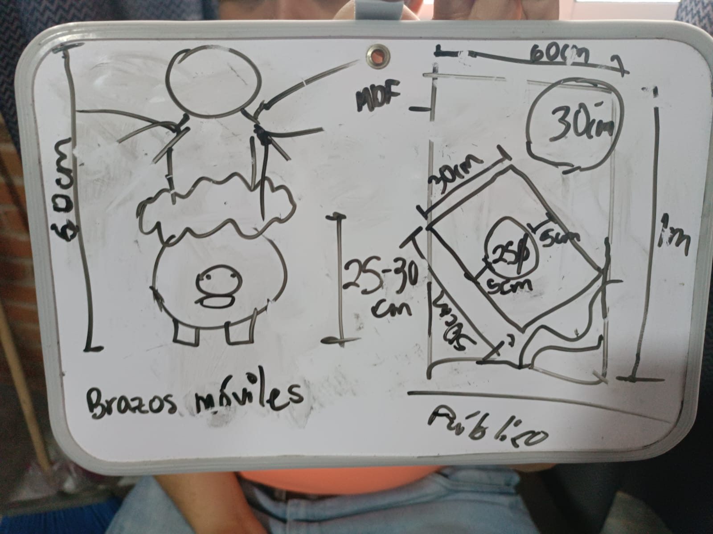

Nuestro Animatrónico
Un vistazo a nuestra interpretación de "La Cuchibruja", desde el concepto hasta la creación final.

Arte Conceptual
Los primeros bocetos y diseños que definieron la estética y el ambiente de nuestro proyecto.

Proceso de Construcción
Fotografías del ensamblaje mecánico, la instalación de la electrónica y el trabajo artesanal.

Resultado Final
El animatrónico terminado, listo para contar su leyenda en Cocotrón 2025.